Spatial Visium exploratory data analysis
Lambda Moses
2024-11-22
Source:vignettes/vig2_visium.Rmd
vig2_visium.RmdIntroduction
This vignette provides an introduction to exploratory spatial data
analysis methods via the Voyager package in the context of
a Visium dataset.
library(Voyager)
library(SpatialFeatureExperiment)
library(scater)
library(scran)
library(SFEData)
library(sf)
library(ggplot2)
library(scales)
library(patchwork)
library(BiocParallel)
library(bluster)
library(dplyr)
library(reticulate)
theme_set(theme_bw(10))<<<<<<< HEAD
Dataset
The dataset used in this vignette is from the paper Large-scale
integration of single-cell transcriptomic data captures transitional
progenitor states in mouse skeletal muscle regeneration (McKellar2021-ek?). Notexin was
injected into the tibialis anterior muscle of mice to induce injury, and
the healing muscle was collected 2, 5, and 7 days post injury for Visium
analysis. The dataset in this vignette is from the timepoint at day 2.
The vignette starts with a SpatialFeatureExperiment (SFE)
object.
The gene count matrix was directly downloaded from
GEO. All 4992 spots, whether in tissue or not, are included. The
H&E image was used for nuclei and myofiber segmentation. A subset of
nuclei from randomly selected regions from all 3 timepoints were
manually annotated to train a StarDist model to segment the rest of the
nuclei, and the myofibers were all manually segmented. The tissue
boundary was found by thresholding in OpenCV, and small polygons were
removed as they are likely to be debris. Spot polygons were constructed
with the spot centroid coordinates and diameter in the Space Ranger
output. The in_tissue column in colData
indicates which spot polygons intersect the tissue polygons, and is
based on st_intersects().
Tissue boundary, nuclei, myofiber, and Visium spot polygons are
stored as sf data frames in the SFE object. See the
vignette of SpatialFeatureExperiment for more details
on the structure of the SFE object. The SFE object of this dataset is
provided in the SFEData package; we begin by downloading
the data and loading it into R.
(sfe <- McKellarMuscleData("full"))
#> see ?SFEData and browseVignettes('SFEData') for documentation
#> loading from cache
#> class: SpatialFeatureExperiment
#> dim: 15123 4992
#> metadata(0):
#> assays(1): counts
#> rownames(15123): ENSMUSG00000025902 ENSMUSG00000096126 ...
#> ENSMUSG00000064368 ENSMUSG00000064370
#> rowData names(6): Ensembl symbol ... vars cv2
#> colnames(4992): AAACAACGAATAGTTC AAACAAGTATCTCCCA ... TTGTTTGTATTACACG
#> TTGTTTGTGTAAATTC
#> colData names(12): barcode col ... prop_mito in_tissue
#> reducedDimNames(0):
#> mainExpName: NULL
#> altExpNames(0):
#> spatialCoords names(2) : imageX imageY
#> imgData names(1): sample_id
#>
#> unit: full_res_image_pixels
#> Geometries:
#> colGeometries: spotPoly (POLYGON)
#> annotGeometries: tissueBoundary (POLYGON), myofiber_full (POLYGON), myofiber_simplified (POLYGON), nuclei (POLYGON), nuclei_centroid (POINT)
#>
#> Graphs:
#> Vis5A:The H&E image of this section: 
if (!file.exists("tissue_lowres_5a.jpeg")) {
download.file("https://raw.githubusercontent.com/pachterlab/voyager/main/vignettes/tissue_lowres_5a.jpeg",
destfile = "tissue_lowres_5a.jpeg")
}The image can be added to the SFE object and plotted behind the geometries, and needs to be flipped to align to the spots because the origin is at the top left for the image but bottom left for geometries.
sfe <- addImg(sfe, imageSource = "tissue_lowres_5a.jpeg", sample_id = "Vis5A",
image_id = "lowres",
scale_fct = 1024/22208)Exploratory data analysis
Spots in tissue
While the example dataset has all Visium spots whether on tissue or not, only spots that intersect tissue are used for further analyses.
names(colData(sfe))
#> [1] "barcode" "col" "row" "x" "y" "dia"
#> [7] "tissue" "sample_id" "nCounts" "nGenes" "prop_mito" "in_tissue"Total UMI counts (nCounts), number of genes detected per
spot (nGenes), and the proportion of mitochondrially
encoded counts (prop_mito) have been precomputed and are in
colData(sfe). The plotSpatialFeature function
can be used to visualize various attributes in space: the expression of
any gene, colData values, and geometry attributes in
colGeometry and annotGeometry. The Visium
spots are plotted as polygons reflecting their actual size relative to
the tissue, rather than as points, as is the case in other packages that
plot Visium data. The plotting of geometries is being performed under
the hood with geom_sf.
The tissue boundary was found by thresholding the H&E image and
removing small polygons that are most likely debris. The
in_tissue column of colData(sfe) indicates
which Visium spot polygon intersects the tissue polygon; this can be
found with SpatialFeatureExperiment::annotPred().
We demonstrate the use of scran (Lun2016-yq?) for normalization
below, although we note that it is not necessarily the best approach to
normalizing spatial transcriptomics data. The problem of when and how to
normalize spatial transcriptomics data is non-trivial because, as the
nCounts plot in space shows above, spatial autocorrelation
is evident. Furthemrore, in Visium, reverse transcription occurs in situ
on the spots, but PCR amplification occurs after the cDNA is dissociated
from the spots. Artifacts may be subsequently introduced from the
amplification step, and these would not be associated with spatial
origin. Spatial artifacts may arise from the diffusion of transcripts
and tissue permeablization. However, given how the total counts seem to
correspond to histological regions, the total counts may have a
biological component and hence should not be treated as a technical
artifact to be normalized away as in scRNA-seq data normalization
methods. In other words, the issue of normalization for spatial
transcriptomics data, and Visium in particular, is complex and is
currently unsolved.
sfe_tissue <- sfe[,colData(sfe)$in_tissue]
sfe_tissue <- sfe_tissue[rowSums(counts(sfe_tissue)) > 0,]
#clusters <- quickCluster(sfe_tissue)
#sfe_tissue <- computeSumFactors(sfe_tissue, clusters=clusters)
#sfe_tissue <- sfe_tissue[, sizeFactors(sfe_tissue) > 0]
sfe_tissue <- logNormCounts(sfe_tissue)Myofiber and nuclei segmentation polygons are available in this
dataset in the annotGeometries field. Myofibers were
manually segmented, and nuclei were segmented with StarDist
trained with a manually segmented subset.
annotGeometryNames(sfe_tissue)
#> [1] "tissueBoundary" "myofiber_full" "myofiber_simplified"
#> [4] "nuclei" "nuclei_centroid"From myofibers and nuclei to Visium spots
The plotSpatialFeature() function can also be used to
plot attributes of geometries, i.e. the non-geometry columns in the
sf data frames in the rowGeometries,
colGeometries, or annotGeometries fields of
the SFE object. For rowGeometries and
colGeometries, such columns which are associated with the
sf data frames rather than rowData or
colData, are allowed because one can specify how these
columns associate with the geometries (see st_agr
and documentation
of st_sf). When an attribute of an
annotGeometry is plotted along side gene expression or
colData or colGeometry attribute, the
annotGeometry attribute is plotted with a different color
palette to distinguish it from the column associated values.
The myofiber polygons from annotGeometries can be
plotted as shown below, colored by cross section area as observed in the
tissue section. The aes_use argument is set to
color rather than fill (default for polygons)
to only plot the Visium spot outlines to make the myofiber polygons more
visible. The fill argument is set to NA to
make the Visium spots look hollow, and the size argument
controls the thickness of the outlines. The annot_aes
argument specifies which column in the annotGeometry to use
to specify the values of an aesthstic, just like aes in
ggplot2 (aes_string to be precise, since
tidyeval is not used here). The annot_fixed
argument (not used here) can set the fixed size, alpha, color, and etc.
for the annotGeometry.
plotSpatialFeature(sfe_tissue, features = "nCounts",
colGeometryName = "spotPoly",
annotGeometryName = "myofiber_simplified",
aes_use = "color", linewidth = 0.5, fill = NA,
annot_aes = list(fill = "area"))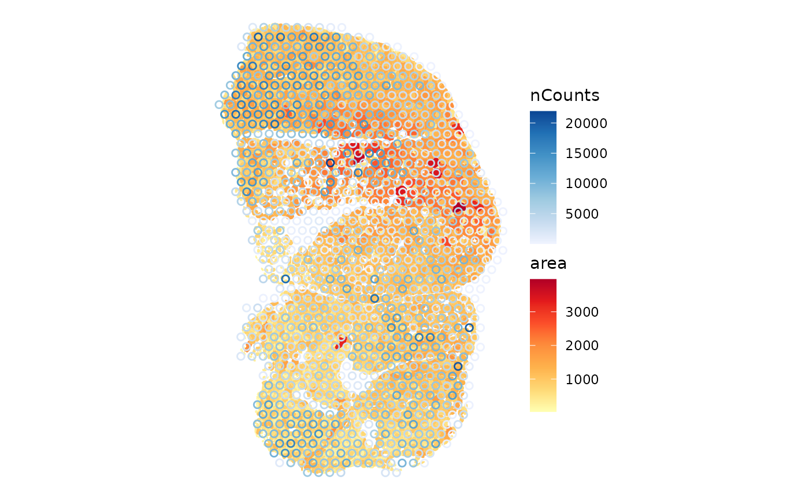
The larger myofibers seem to have fewer total counts, possibly because the larger size of these myofibers dilutes the transcripts. This hints at the need for a normalization procedure.
With SpatialFeatureExperiment, we can find the number of
myofibers and nuclei that intersect each Visium spot. The predicate can
be anything
implemented in sf, so for example, the number of nuclei
fully covered by each Visium spot can also be found. The default
predicate is st_intersects().
colData(sfe_tissue)$n_myofibers <-
annotNPred(sfe_tissue, colGeometryName = "spotPoly",
annotGeometryName = "myofiber_simplified")
plotSpatialFeature(sfe_tissue, features = "n_myofibers",
colGeometryName = "spotPoly", image = "lowres", color = "black",
linewidth = 0.1)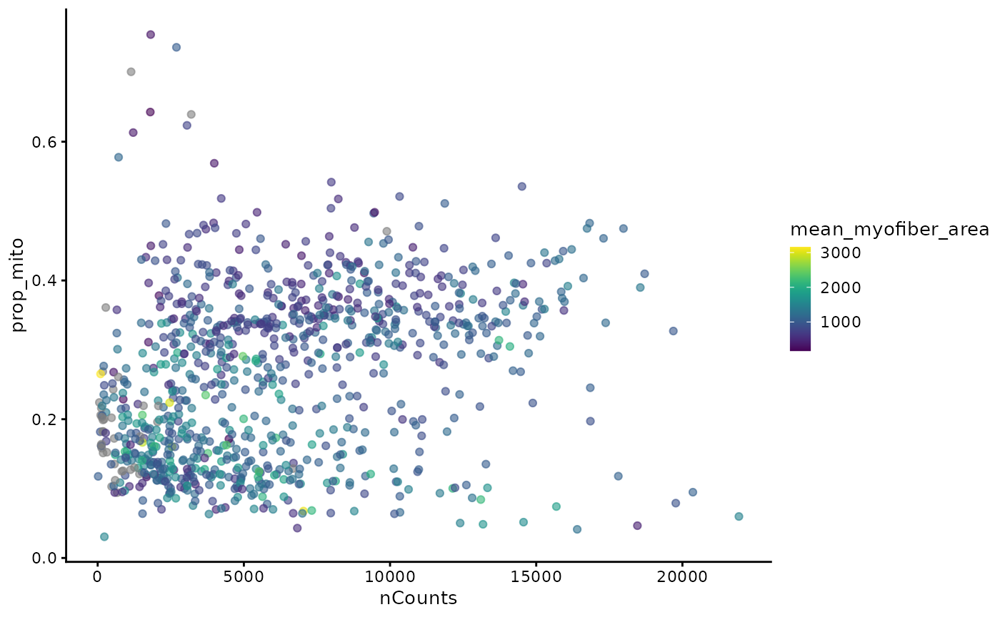
There is no one-to-one mapping between Visium spots and myofibers.
However, we can relate attributes of myofibers to gene expression
detected at the Visium spots. One way to do so is to summarize the
attributes of all myofibers that intersect (or choose another better
predicate implemented in sf) each spot, such as to
calculate the mean, median, or sum. This can be done with the
annotSummary() function in
SpatialFeatureExperiment. The default predicate is
st_intersects(), and the default summary function is
mean().
colData(sfe_tissue)$mean_myofiber_area <-
annotSummary(sfe_tissue, "spotPoly", "myofiber_simplified",
annotColNames = "area")[,1] # it always returns a data frame
# The gray spots don't intersect any myofiber
plotSpatialFeature(sfe_tissue, "mean_myofiber_area", "spotPoly", image = "lowres",
color = "black", linewidth = 0.1)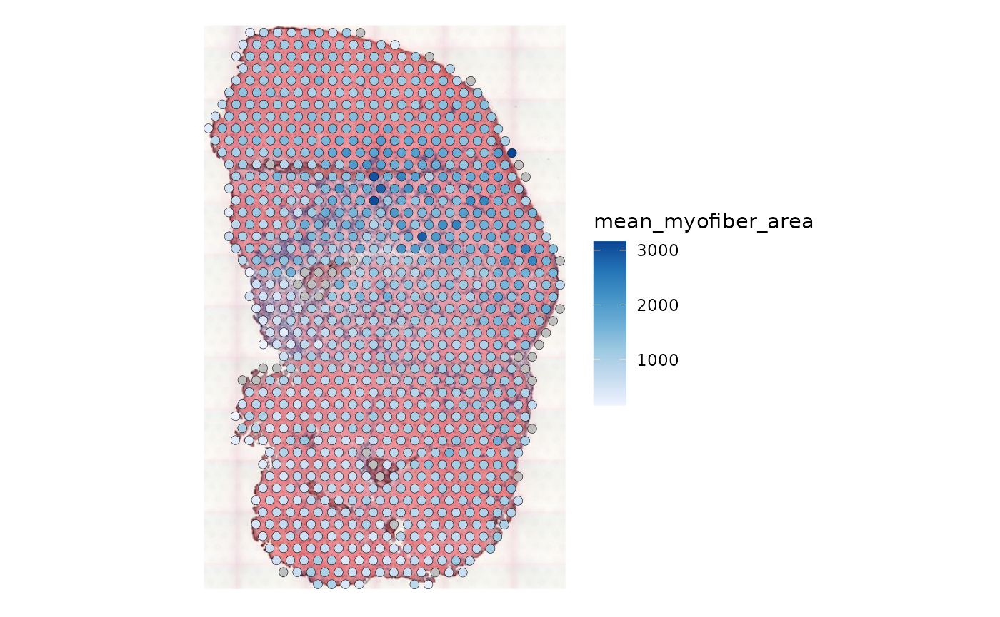
This reveals the relationship between the mean area of myofibers intersecting each Visium spot and other aspects of the spots, such as total counts and gene expression.
The NAs designate spots not intersecting any myofibers, e.g. those in the inflammatory region.
In the Basic Visium vignette, we encountered two mysterious branches and two clusters in the nGenes vs. nCounts plot and the proportion of mitochondrial counts vs. nCounts plot. Now we see that the two clusters seem to be related to myofiber size.
plotColData(sfe_tissue, x = "nCounts", y = "nGenes", colour_by = "mean_myofiber_area")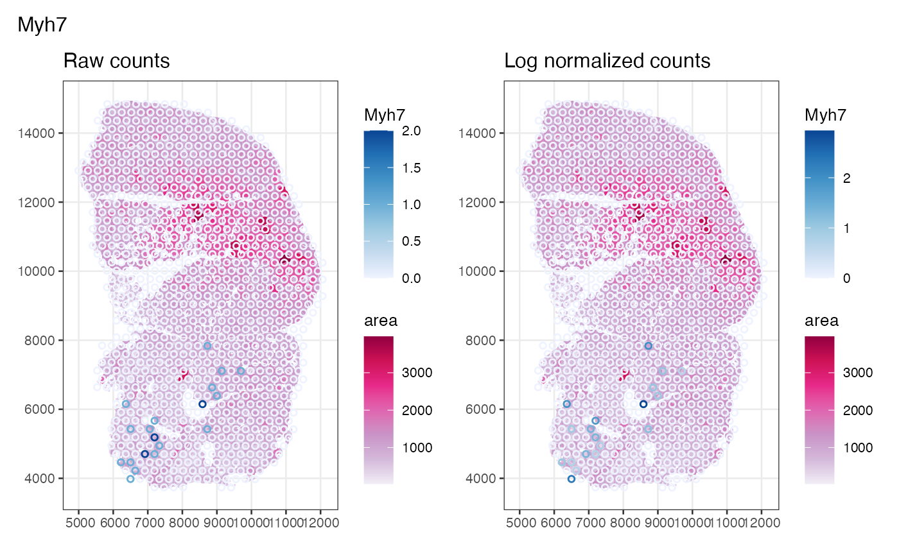
plotColData(sfe_tissue, x = "nCounts", y = "prop_mito", colour_by = "mean_myofiber_area")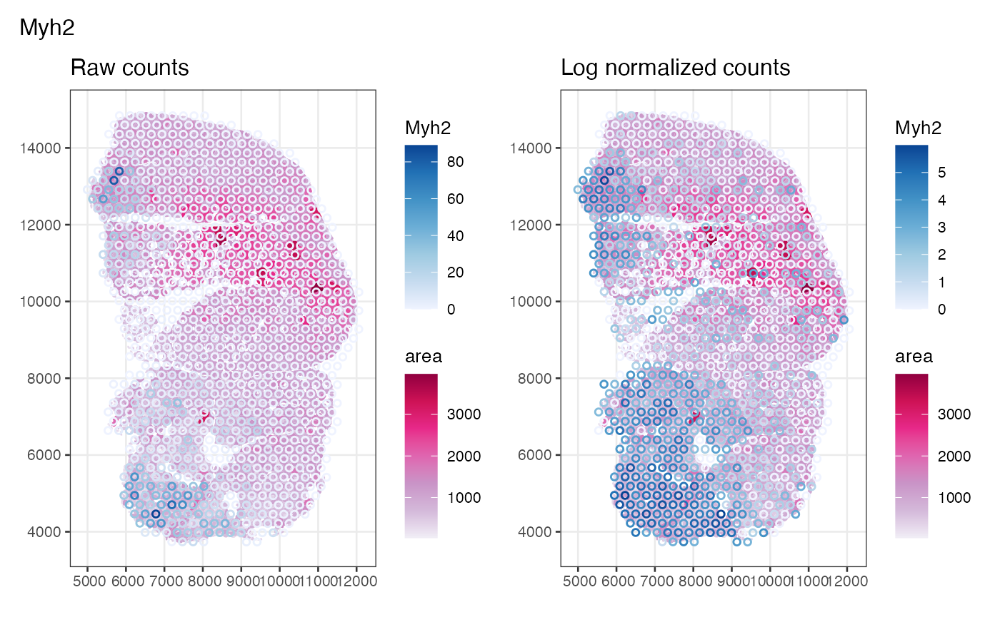
Myofiber types
Marker genes: Myh7 (Type I, slow twitch, aerobic), Myh2 (Type IIa, fast twitch, somewhat aerobic), Myh4 (Type IIb, fast twitch, anareobic), Myh1 (Type IIx, fast twitch, anaerobic), from this protocol (Wang2017-li?)
markers <- c(I = "Myh7", IIa = "Myh2", IIb = "Myh4", IIx = "Myh1")We can use the gget search and gget info modules from the gget package to get the Ensembl IDs and additional information (for example their NCBI description) for these marker genes: <<<<<<< HEAD
>>>>>>> documentation
gget_search <- gget$search(list("Myh7", "Myh2", "Myh4", "Myh1"), species="mouse")
gget_search <- gget_search[gget_search$gene_name %in% list("Myh7", "Myh2", "Myh4", "Myh1"), ]
gget_search<<<<<<< HEAD
>>>>>>> documentation
gget_info <- gget$info(gget_search$ensembl_id)
rownames(gget_info) <- gget_info$primary_gene_name
select(gget_info, ncbi_description)We first examine the Type I myofibers. This is a fast twitch muscle,
so we don’t expect many slow twitch Type I myofibers. Row names in
sfe_tissue are Ensembl IDs in order to avoid ambiguity as
sometimes multiple Ensembl IDs have the same gene symbol and some genes
have aliases. However, gene symbols are shorter and more human readable
than Ensembl IDs, and are better suited to display on plots. In the
plotSpatialFeature() function and other functions in
Voyager, even when the row names are recorded as Ensembl
IDs, the features argument can take gene symbols with the
swap_rownames argument indicating a column in
rowData(sfe) that stores the gene symbols. Gene symbols is
then also shown in plots instead of Ensembl IDs. If one gene symbol
matches multiple Ensembl IDs in the dataset, then a warning will be
given.
The exprs_values argument specifies the assay to use,
which is by default “logcounts”, i.e. the log normalized data. This
default may or may not be suitable in practice given that total UMI
counts may have biological relevance in spatial data. Therefore, we plot
both the raw counts and the log normalized counts:
# Function specific for this vignette, with some hard coded values
plot_counts_logcounts <- function(sfe, feature) {
p1 <- plotSpatialFeature(sfe, feature, "spotPoly",
annotGeometryName = "myofiber_simplified",
annot_aes = list(fill = "area"), swap_rownames = "symbol",
exprs_values = "counts", aes_use = "color", linewidth = 0.5,
fill = NA) +
ggtitle("Raw counts")
p2 <- plotSpatialFeature(sfe, feature, "spotPoly",
annotGeometryName = "myofiber_simplified",
annot_aes = list(fill = "area"), swap_rownames = "symbol",
exprs_values = "logcounts", aes_use = "color", linewidth = 0.5,
fill = NA) +
ggtitle("Log normalized counts")
p1 + p2 +
plot_annotation(title = feature)
}
plot_counts_logcounts(sfe_tissue, markers["I"])
A marker gene for type IIa myofibers is shown above. It is straightforward to modify the plotting to display markers for type IIb and type IIx myofibers:
plot_counts_logcounts(sfe_tissue, markers["IIa"])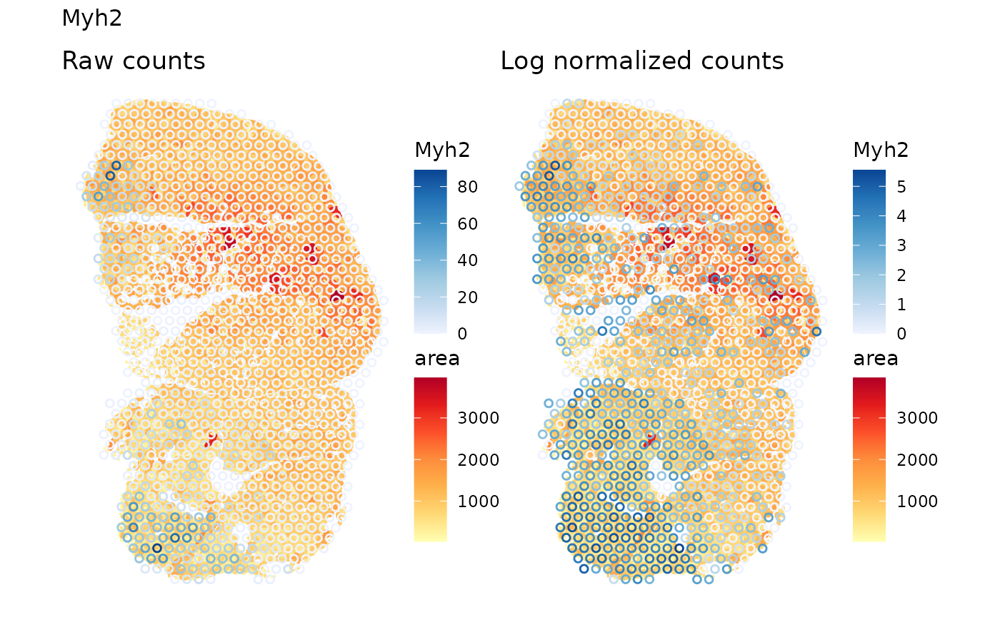
Type IIa myofibers also tend to be clustered together on left side of the tissue.
As SFE inherits from SCE, the non-spatial EDA plots from the
scater package can also be used:
plotColData(sfe_tissue, x = "mean_myofiber_area", y = "prop_mito",
colour_by = markers["IIa"], by_exprs_values = "logcounts",
swap_rownames = "symbol")
#> Warning: Removed 36 rows containing missing values or values outside the scale range
#> (`geom_point()`).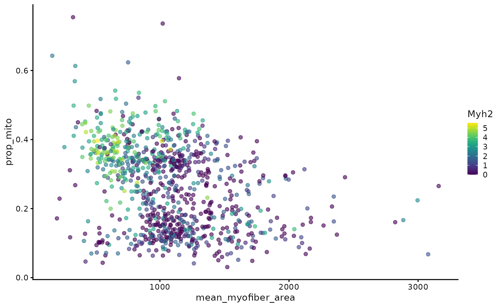
Plotting proportion of mitochondrial counts vs. mean myofiber area, we see two clusters, one with higher proportion of mitochondrial counts and smaller area, and another with lower proportion of mitochondrial counts and on average slightly larger area. Type IIa myofibers tend to have smaller area and a larger proportion of mitochondrial counts.
Spatial neighborhood graphs
A spatial neighborhood graph is required to compute spatial
dependency metrics such as Moran’s I and Geary’s C. The
SpatialFeatureExperiment package wraps methods in
spdep to find spatial neighborhood graphs, which are stored
within the SFE object (see spdep documentation for
gabrielneigh(), knearneigh(),
poly2nb(), and tri2nb()). The
Voyager package then uses these graphs for spatial
dependency analyses, again based on spdep in this first
version, but methods from other geospatial packages, some of which also
use the spatial neighborhood graphs, may be added later.
For Visium, where the spots are in a hexagonal grid, the spatial
neighborhood graph is straightforward. However, for spatial technologies
with single cell resolution, e.g. MERFISH, different methods can be used
to find the spatial neighborhood graph. In this example, the method
“poly2nb” was used for myofibers, and it identifies myofiber polygons
that physically touch each other. zero.policy = TRUE will
allow for singletons, i.e. nodes without neighbors in the graph; in the
inflamed region, there are more singletons. We have not yet benchmarked
spatial neighborhood construction methods to determine which is the
“best” for different technologies; the particular method used here is
for demonstration purposes and may not be the best in practice:
colGraph(sfe_tissue, "visium") <- findVisiumGraph(sfe_tissue)
annotGraph(sfe_tissue, "myofiber_poly2nb") <-
findSpatialNeighbors(sfe_tissue, type = "myofiber_simplified", MARGIN = 3,
method = "poly2nb", zero.policy = TRUE)
#> Warning in (function (pl, row.names = NULL, snap = NULL, queen = TRUE, useC = TRUE, : some observations have no neighbours;
#> if this seems unexpected, try increasing the snap argument.
#> Warning in (function (pl, row.names = NULL, snap = NULL, queen = TRUE, useC = TRUE, : neighbour object has 75 sub-graphs;
#> if this sub-graph count seems unexpected, try increasing the snap argument.The plotColGraph() function plots the graph in space
associated with a colGeometry, along with the geometry of
interest.
plotColGraph(sfe_tissue, colGraphName = "visium", colGeometryName = "spotPoly") +
theme_void()
Similarly, the plotAnnotGraph() function plots the graph
associated with an annotGeometry, along with the geometry
of interest.
plotAnnotGraph(sfe_tissue, annotGraphName = "myofiber_poly2nb",
annotGeometryName = "myofiber_simplified") + theme_void()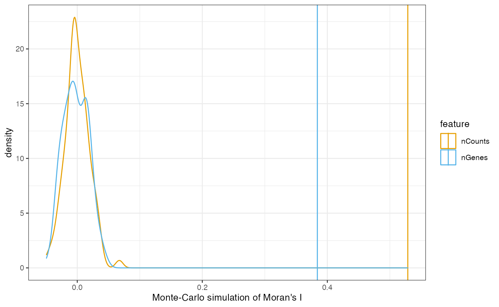
There is no plotRowGraph yet since we haven’t worked
with a dataset where spatial graphs related to genes are relevant,
although the SFE object supports row graphs.
Exploratory spatial data analysis
All spatial autocorrelation metrics in this package can be computed
directly on a vector or a matrix rather than an SFE object. The user
interface emulates those of dimension reductions in the
scater package (e.g. calculateUMAP() that
takes in a matrix or SCE object and returns a matrix, and
runUMAP() that takes in an SCE object and adds the results
to the reducedDims field of the SCE object). So
calculate* functions take in a matrix or an SFE object and
directly return the results (format of the results depends on the
structure of the results), while run* functions take in an
SFE object and add the results to the object. In addition,
colData* functions compute the metrics for numeric
variables in colData. colGeometry* functions
compute the metrics for numeric columns in a colGeometry.
annotGeometry* functions compute the metrics for numeric
columns in a annotGeometry.
Univariate global
Voyager supports many univariate global spatial
autocorrelation implemented in spdep for ESDA: Moran’s I
and Geary’s C, permutation testing for Moran’s I and Geary’s C, Moran
plot, and correlograms. In addition, beyond spdep,
Voyager can cluster Moran plots and correlograms. Plotting
functions taking in SFE objects are implemented to plot the results with
ggplot2 and with more customization options than
spdep plotting functions. The functions
calculateUnivariate(), runUnivariate(),
colDataUnivariate(), colGeometryUnivariate(),
and annotGeometryUnivariate() compute univariate spatial
statistics. The argument type, which indicates the
corresponding function names in spdep, determines which
spatial statistics are computed.
All univariate global methods in Voyager are listed
here:
listSFEMethods(variate = "uni", scope = "global")
#> name description
#> 1 moran Moran's I
#> 2 geary Geary's C
#> 3 moran.mc Moran's I with permutation testing
#> 4 geary.mc Geary's C with permutation testing
#> 5 sp.mantel.mc Mantel-Hubert spatial general cross product statistic
#> 6 moran.test Moran's I test
#> 7 geary.test Geary's C test
#> 8 globalG.test Global G test
#> 9 sp.correlogram Correlogram
#> 10 variogram Variogram with model
#> 11 variogram_map Variogram mapWhen calling calculate*variate() or
run*variate(), the type (2nd) argument takes
either an SFEMethod object (see SFEMethod()
and vignette
on SFEMethod) or a string that matches an entry in the
name column in the data frame returned by
listSFEMethods().
To demonstrate spatial autocorrelation in gene expression, top highly
variable genes (HVGs) are used. The HVGs are found with the
scran method.
dec <- modelGeneVar(sfe_tissue)
hvgs <- getTopHVGs(dec, n = 50)A global statistic yields one result for the entire dataset.
Moran’s I
There are several ways to quantify spatial autocorrelation, the most common of which is Moran’s I:
where
is the number of spots or locations,
and
are different locations, or spots in the Visium context,
is a variable with values at each location, and
is a spatial weight, which can be inversely proportional to distance
between spots or an indicator of whether two spots are neighbors,
subject to various definitions of neighborhood and whether to normalize
the number of neighbors. The spdep
package uses the neighborhood.
Moran’s I can be understood as the Pearson correlation between the value at each location and the average value at its neighbors. Just like Pearson correlation, Moran’s I is generally bound between -1 and 1, where positive value indicates positive spatial autocorrelation and negative value indicates negative spatial autocorrelation.
Upon visual inspection, total UMI counts per spot seem to have
spatial autocorrelation. A spatial neighborhood graph is required to
compute Moran’s I, and is specified with the listw
argument.
For matrices, the rows are the features, as in the gene count matrix.
# Directly use vector or matrix, and multiple features can be specified at once
calculateUnivariate(t(colData(sfe_tissue)[,c("nCounts", "nGenes")]),
type = "moran",
listw = colGraph(sfe_tissue, "visium"))
#> DataFrame with 2 rows and 2 columns
#> moran K
#> <numeric> <numeric>
#> nCounts 0.528705 3.00082
#> nGenes 0.384028 3.88036“moran” is Moran’s I, and K is sample kurtosis.
To add the results to the SFE object, specifically for colData:
sfe_tissue <- colDataUnivariate(sfe_tissue, features = c("nCounts", "nGenes"),
colGraphName = "visium", type = "moran")
colFeatureData(sfe_tissue)[c("nCounts", "nGenes"),]
#> DataFrame with 2 rows and 2 columns
#> moran_Vis5A K_Vis5A
#> <numeric> <numeric>
#> nCounts 0.528705 3.00082
#> nGenes 0.384028 3.88036For colData, the results are added to
colFeatureData(sfe), and features for which Moran’s I is
not calculated have NA. The column names of featureData
distinguishes between different samples (there’s only one sample in this
dataset), and are parsed by plotting functions.
To add the results to the SFE object, specifically for geometries: Here “area” is the area of the cross section of each myofiber as seen in this tissue section and “eccentricity” is the eccentricity of the ellipse fitted to each myofiber.
# Remember zero.policy = TRUE since there're singletons
sfe_tissue <- annotGeometryUnivariate(sfe_tissue, type = "moran",
features = c("area", "eccentricity"),
annotGeometryName = "myofiber_simplified",
annotGraphName = "myofiber_poly2nb",
zero.policy = TRUE)
head(attr(annotGeometry(sfe_tissue, "myofiber_simplified"), "featureData"))
#> DataFrame with 6 rows and 2 columns
#> moran_Vis5A K_Vis5A
#> <numeric> <numeric>
#> lyr.1 NA NA
#> area 0.327888 4.95675
#> perimeter NA NA
#> eccentricity 0.110938 3.26913
#> theta NA NA
#> sine_theta NA NAFor a non-geometry column in a colGeometry,
colGeometryUnivariate() is like
annotGeometryUnivariate() here, but none of the
colGeometries in this dataset has extra columns.
For gene expression, the logcounts assay is used by
default (use the exprs_values argument to change the
assay), though this may or may not be best practice. If the metrics are
computed for a large number of features, parallel computing is
supported, with BiocParallel,
with the BPPARAM argument.
sfe_tissue <- runUnivariate(sfe_tissue, type = "moran", features = hvgs,
colGraphName = "visium",
BPPARAM = MulticoreParam(2))
rowData(sfe_tissue)[head(hvgs),]
#> DataFrame with 6 rows and 8 columns
#> Ensembl symbol type means
#> <character> <character> <character> <numeric>
#> ENSMUSG00000029304 ENSMUSG00000029304 Spp1 Gene Expression 1.63722
#> ENSMUSG00000050708 ENSMUSG00000050708 Ftl1 Gene Expression 2.37981
#> ENSMUSG00000050335 ENSMUSG00000050335 Lgals3 Gene Expression 1.43189
#> ENSMUSG00000021939 ENSMUSG00000021939 Ctsb Gene Expression 2.73117
#> ENSMUSG00000021190 ENSMUSG00000021190 Lgmn Gene Expression 1.11278
#> ENSMUSG00000018893 ENSMUSG00000018893 Mb Gene Expression 2.11118
#> vars cv2 moran_Vis5A K_Vis5A
#> <numeric> <numeric> <numeric> <numeric>
#> ENSMUSG00000029304 60.1583 22.4430 0.734937 1.63516
#> ENSMUSG00000050708 162.1931 28.6384 0.665563 1.81841
#> ENSMUSG00000050335 48.0739 23.4471 0.741474 1.68098
#> ENSMUSG00000021939 131.6232 17.6455 0.708362 1.86896
#> ENSMUSG00000021190 21.4505 17.3228 0.659916 1.66838
#> ENSMUSG00000018893 74.1782 16.6428 0.675840 1.82510Geary’s C
Another spatial autocorrelation metric is Geary’s C, defined as:
Geary’s C below 1 indicates positive spatial autocorrelation, and above 1 indicates negative spatial autocorrelation.
To compute Geary’s C for features of interest replace
type = "moran" in the previous section with
type = "geary", and add the results to the SFE object. For
example, for colData
sfe_tissue <- colDataUnivariate(sfe_tissue, features = c("nCounts", "nGenes"),
colGraphName = "visium", type = "geary")
colFeatureData(sfe_tissue)[c("nCounts", "nGenes"),]
#> DataFrame with 2 rows and 3 columns
#> moran_Vis5A K_Vis5A geary_Vis5A
#> <numeric> <numeric> <numeric>
#> nCounts 0.528705 3.00082 0.474892
#> nGenes 0.384028 3.88036 0.605797There’s only one column for K since it’s the same for Moran’s I and
Geary’s C. Here both Moran’s I and Geary’s C suggest positive spatial
autocorrelation for nCounts and nGenes.
Other univariate global methods, including permutation testing for
Moran’s I and Geary’s C, correlograms, and Moran scatter plot can also
be called with functions such as runUnivariate, by
specifying the type argument. See documentation of
runUnivariate to see the available methods and see
documentation of the corresponding spdep functions to see
the extra arguments required for each method.
Permutation testing
To establish whether the spatial autocorrelation is statistically
significant, the moran.test() function in
spdep can be used. It provides a p-value, but the p-value
may not be accurate if the data is not normally distributed. As gene
expression data is generally not normally distributed and data
normalization doesn’t always work well, we use permutation testing to
test the significance of Moran’s I and Geary’s C, wrapping
moran.mc() in spdep. The “mc” stands for Monte
Carlo. The nsim argument specifies the number of
simulations.
The following adds the results to the SFE object:
set.seed(29)
sfe_tissue <- colDataUnivariate(sfe_tissue, features = c("nCounts", "nGenes"),
colGraphName = "visium", nsim = 1000,
type = "moran.mc")
colFeatureData(sfe_tissue)[c("nCounts", "nGenes"),]
#> DataFrame with 2 rows and 9 columns
#> moran_Vis5A K_Vis5A geary_Vis5A moran.mc_statistic_Vis5A
#> <numeric> <numeric> <numeric> <numeric>
#> nCounts 0.528705 3.00082 0.474892 0.528705
#> nGenes 0.384028 3.88036 0.605797 0.384028
#> moran.mc_parameter_Vis5A moran.mc_p.value_Vis5A
#> <numeric> <numeric>
#> nCounts 1001 0.000999001
#> nGenes 1001 0.000999001
#> moran.mc_alternative_Vis5A moran.mc_method_Vis5A
#> <character> <character>
#> nCounts greater Monte-Carlo simulati..
#> nGenes greater Monte-Carlo simulati..
#> moran.mc_res_Vis5A
#> <list>
#> nCounts -0.01090202, 0.00921862,-0.00293951,...
#> nGenes -0.000585631, 0.035577943,-0.002816707,...Note that while the test is performed for multiple features, the p-values here are not corrected for multiple hypothesis testing.
The results can be plotted:
plotMoranMC(sfe_tissue, c("nCounts", "nGenes"))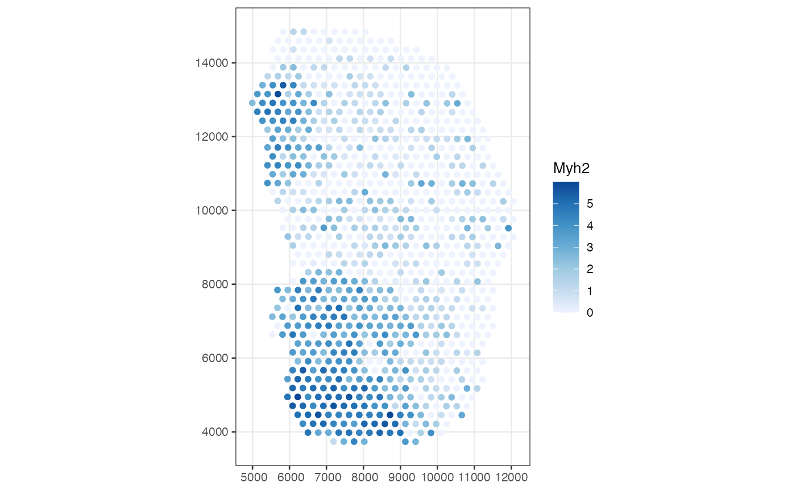
By default, the colorblind friendly palette from dittoSeq
is used for categorical variables. The density plot is of Moran’s I from
the simulations where the values are permuted and disconnected from
spatial locations, and the vertical line is the actual Moran’s I value.
The simulation indicates that the actual Moran’s I is much higher than
that from the simulations where the values are dissociated from spatial
locations and permuted among the locations, indicating that spatial
autocorrelation is very significant.
Use type = "geary.mc" for permutation testing for
Geary’s C.
The spdep package can also compute p-values of Moran’s I
analytically, but the theory behind the mean and variance of the null
distribution of Moran’s I assumes normal distribution of the data, while
gene expression data is generally non-normal. However, according to
(Griffith2010-uy?), with
large sample size (“preferably at least 100”), mean and variance of
Moran’s I of several iid non-normal simulated datasets (including
negative binomial, which is commonly used to model gene expression data)
don’t seem to deviate much from the values expected from normally
distributed data. Spatial transcriptomics datasets typically have
thousands or more spots or cells, so sample size is most likely large
enough. Hence using the analytical test on non-normal data might not be
too bad. However, with large sample size, a minuscule difference can
create very significant p-values. Here we perform the analytical test
for Moran’s I:
sfe_tissue <- colDataUnivariate(sfe_tissue, features = c("nCounts", "nGenes"),
colGraphName = "visium", type = "moran.test")
names(colFeatureData(sfe_tissue))
#> [1] "moran_Vis5A" "K_Vis5A"
#> [3] "geary_Vis5A" "moran.mc_statistic_Vis5A"
#> [5] "moran.mc_parameter_Vis5A" "moran.mc_p.value_Vis5A"
#> [7] "moran.mc_alternative_Vis5A" "moran.mc_method_Vis5A"
#> [9] "moran.mc_res_Vis5A" "moran.test_statistic_Vis5A"
#> [11] "moran.test_p.value_Vis5A" "moran.test_alternative_Vis5A"
#> [13] "moran.test_method_Vis5A" "moran.test_Moran.I.statistic_Vis5A"
#> [15] "moran.test_Expectation_Vis5A" "moran.test_Variance_Vis5A"Now compare the p-values from permutation and analytical test; in both cases here, the default alternative hypothesis is positive spatial autocorrelation:
# permutation
colFeatureData(sfe_tissue)[c("nCounts", "nGenes"), c("moran.mc_p.value_Vis5A", "moran.test_p.value_Vis5A")]
#> DataFrame with 2 rows and 2 columns
#> moran.mc_p.value_Vis5A moran.test_p.value_Vis5A
#> <numeric> <numeric>
#> nCounts 0.000999001 5.41958e-163
#> nGenes 0.000999001 2.82666e-87The p-values from permutation are limited by the number of permutations (1000 here). Either way, both permutation and analytical tests indicate very significant positive spatial autocorrelation.
A limitation of permutation testing of Moran’s I is that it assumes that each permutation of the values among the locations is equally likely, which is not necessarily true. For instance, in epidemiology, disease rate in regions with small population more likely assumes more extreme values (Assuncao1999-xu?), which is analogous to rare cell types and lowly expressed genes in histological space given that we divide by total UMI counts per spot. The extent this happens may depend on tissue, gene of interest, technology, and data normalization method.
Correlogram
In a correlogram, spatial autocorrelation of higher orders of neighbors (e.g. second order neighbors are neighbors of neighbors) is calculated to see how it decays over the orders. In Visium, with the regular hexagonal grid, order of neighbors is a proxy for distance. For more irregular patterns such as single cells, different methods to find the spatial neighbors may give different results.
For colData, Moran’s I correlogram is computed with
sfe_tissue <- runUnivariate(sfe_tissue, hvgs[1:2], colGraphName = "visium",
order = 10, type = "sp.correlogram")The results can be plotted with plotCorrelogram:
plotCorrelogram(sfe_tissue, hvgs[1:2], swap_rownames = "symbol")![Line plot with order of neighbors (lags) in the x axis and Moran's I value at each lag in the y axis. The x axis ranges from 1 to 10, and the y axis ranges from 0 to 0.8. The lines show trends of decay of spatial autocorrelation with increasing distance of neighbors. Two genes, Car3 and Mb, are shown. Moran's I of both genes decay somewhat linearly from lag 1 to 10. Car3 decays from around 0.75 to around 0.23. Mb decays from around 0.7 to around 0.13. At each lag the error bars are tight (see next paragraph in the main text) and the p-values are less than 0.001 after Benjamini-Hochberg multiple testing correction over the 2 genes and 10 lags.](vig2_visium_files/figure-html/unnamed-chunk-43-1.png)
The error bars are twice the standard deviation of the Moran’s I
value. The standard deviation and p-values (null hypothesis is that
Moran’s I is 0) come from moran.test() (for Geary’s C
correlogram, geary.test()); these should be taken with a
grain of salt for data that is not normally distributed. The p-values
have been corrected for multiple hypothesis testing across all orders
and features. As usual, . means p < 0.1, * means p < 0.05, **
means p < 0.01, and *** means p < 0.001.
Again, this can be done for Geary’s C, colData,
annotGeometry, and etc.
Univariate local
Local statistics yield a result at each location rather than the
whole dataset, while global statistics may obscure local heterogeneity.
See (Fotheringham2009-ak?) for an
interesting discussion of relationships between global and local spatial
statistics. Local statistics are stored in the localResults
field of the SFE object, which can be accessed by the
localResult() or localResults() functions in
the SpatialFeatureExperiment package.
All univariate local methods in Voyager are listed
here:
listSFEMethods(variate = "uni", scope = "local")
#> name description
#> 1 localmoran Local Moran's I
#> 2 localmoran_perm Local Moran's I permutation testing
#> 3 localC Local Geary's C
#> 4 localC_perm Local Geary's C permutation testing
#> 5 localG Getis-Ord Gi(*)
#> 6 localG_perm Getis-Ord Gi(*) with permutation testing
#> 7 LOSH Local spatial heteroscedasticity
#> 8 LOSH.mc Local spatial heteroscedasticity permutation testing
#> 9 LOSH.cs Local spatial heteroscedasticity Chi-square test
#> 10 moran.plot Moran scatter plotMoran scatter plot
In the Moran scatter plot (Anselin1996-mo?), the x axis is the value at a spot, and the y axis is the average value of the neighbors. The slope of the fitted line is Moran’s I. Sometimes clusters appear in this plot, showing different kinds of neighborhoods.
For gene expression, to use one gene (log normalized value) to demonstrate:
sfe_tissue <- runUnivariate(sfe_tissue, "Myh2", colGraphName = "visium",
type = "moran.plot", swap_rownames = "symbol")
moranPlot(sfe_tissue, "Myh2", graphName = "visium", swap_rownames = "symbol")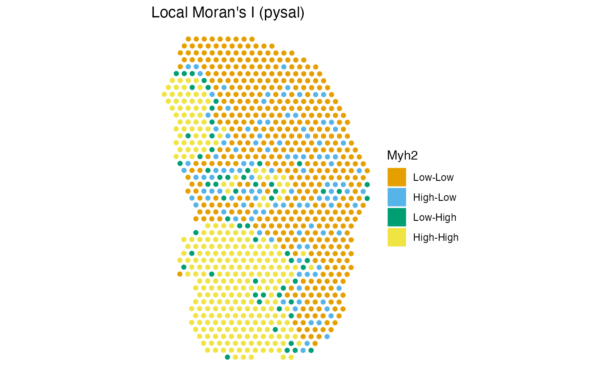
The dashed lines mark the mean in Myh2 and spatially lagged Myh2.
There are no singletons here. Some Visium spots with lower Myh2
expression have neighbors that don’t express Myh2 but spots that don’t
express Myh2 usually have at least some neighbors that do. There are twp
main clusters for spots whose neighbors do express Myh2: those with high
(above average) expression whose neighbors also have high expression,
and those with low expression whose neighbors also have low expression.
Other features may show different kinds of clusters. We can use k-means
clustering to identify clusters, though any clustering method supported
by the bluster package can be used.
set.seed(29)
clusts <- clusterMoranPlot(sfe_tissue, "Myh2", BLUSPARAM = KmeansParam(2),
swap_rownames = "symbol")We can use the gget search module to get the Ensembl ID for Myh2: <<<<<<< HEAD
moranPlot(sfe_tissue, "Myh2", graphName = "visium",
color_by = clusts$ENSMUSG00000033196, swap_rownames = "symbol")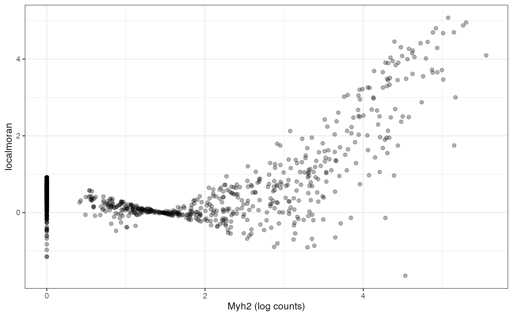
Plot the clusters in space
colData(sfe_tissue)$Myh2_moranPlot_clust <- clusts$ENSMUSG00000033196
plotSpatialFeature(sfe_tissue, "Myh2_moranPlot_clust", colGeometryName = "spotPoly",
image = "lowres", color = "black", linewidth = 0.1)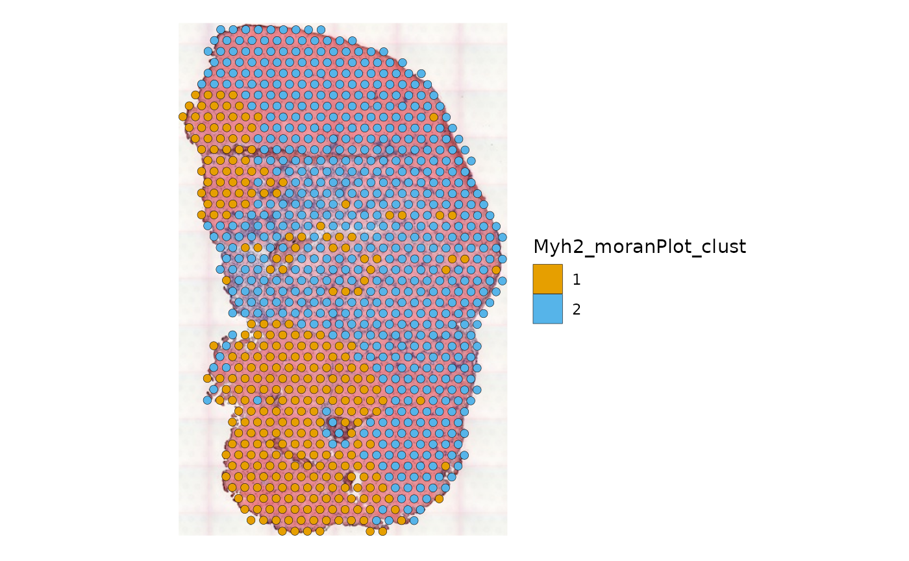
This can also be done for colData,
annotGeometry, and etc. as in Moran’s I and permutation
testing.
Local Moran’s I
To recap, global Moran’s I is defined as
Local Moran’s I (Anselin1995-cs?) is defined as
It’s similar to global Moran’s I, but the values at locations are not summed and there’s no normalization by the sum of spatial weights.
sfe_tissue <- runUnivariate(sfe_tissue, type = "localmoran", features = "Myh2",
colGraphName = "visium", swap_rownames = "symbol")It is useful to plot the log normalized Myh2 gene expression as context to interpret the local results:
plotSpatialFeature(sfe_tissue, features = "Myh2", colGeometryName = "spotPoly",
swap_rownames = "symbol", image_id = "lowres", color = "black",
linewidth = 0.1)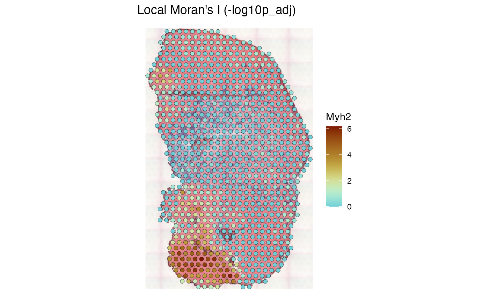
plotLocalResult(sfe_tissue, "localmoran", features = "Myh2",
colGeometryName = "spotPoly",divergent = TRUE,
diverge_center = 0, image_id = "lowres",
swap_rownames = "symbol", color = "black",
linewidth = 0.1)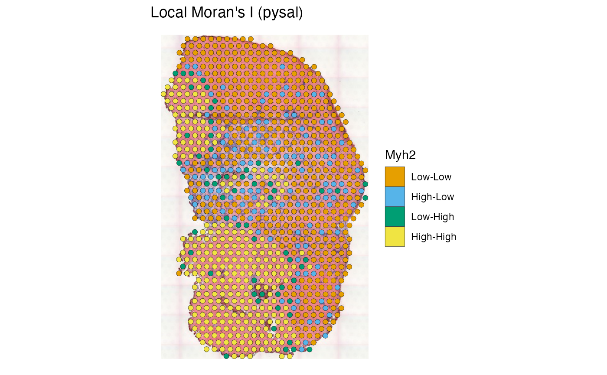
We see that regions with higher Myh2 expression also have stronger spatial autocorrelation. It is interesting to see how spatial autocorrelation relates to gene expression level, much as finding how variance relates to mean in the expression of each gene, which usually indicates overdispersion compared to Poisson in scRNA-seq and Visium data:
df <- data.frame(myh2 = logcounts(sfe_tissue)[rowData(sfe_tissue)$symbol == "Myh2",],
Ii = localResult(sfe_tissue, "localmoran", "Myh2",
swap_rownames = "symbol")[,"Ii"])
ggplot(df, aes(myh2, Ii)) + geom_point(alpha = 0.3) +
labs(x = "Myh2 (log counts)", y = "localmoran")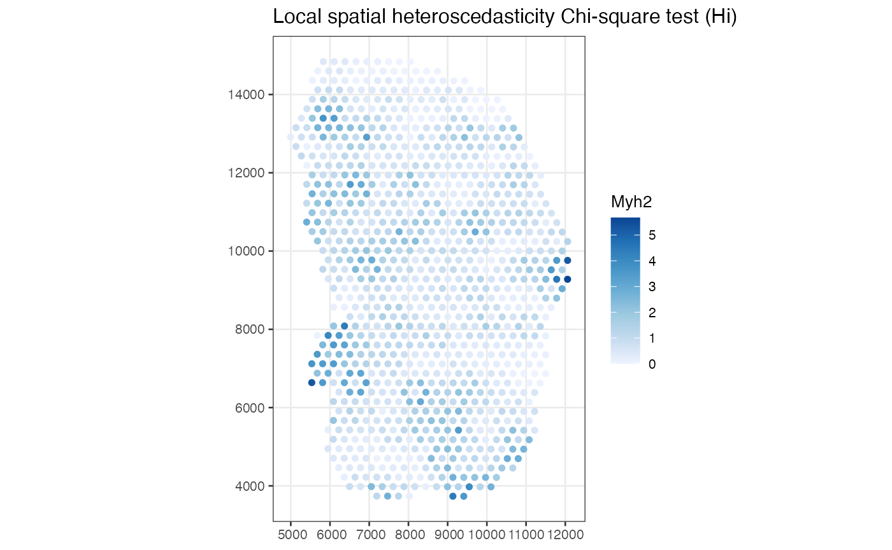
For this gene, Visium spots with higher expression also tend to have higher local Moran’s I, but this may or may not apply to other genes.
Local spatial analyses often return a matrix or data frame. The
plotLocalResult() function has a default column for each
local spatial method, but other columns can be plotted as well. Use the
localResultAttrs() function to see which columns are
present, and use the attribute argument to specify which
column to plot.
localResultAttrs(sfe_tissue, "localmoran", "Myh2", swap_rownames = "symbol")
#> [1] "Ii" "E.Ii" "Var.Ii" "Z.Ii"
#> [5] "Pr(z != E(Ii))" "mean" "median" "pysal"
#> [9] "-log10p" "-log10p_adj"Some local spatial methods return p-values at each location, in a
column with name like Pr(z != E(Ii)), where the test is two
sided (default, can be changed with the alternative
argument in runUnivariate() which is passed to the relevant
underlying function in spdep). Negative log of the p-value
is computed to facilitate visualization, and the p-value is corrected
for multiple hypothesis testing with p.adjustSP() in
spdep, where the number of tests is the number of neighbors
of each location rather than the total number of locations
(-log10p_adj).
plotLocalResult(sfe_tissue, "localmoran", features = "Myh2",
colGeometryName = "spotPoly", attribute = "-log10p_adj", divergent = TRUE,
diverge_center = -log10(0.05), swap_rownames = "symbol",
image_id = "lowres", color = "black",
linewidth = 0.1)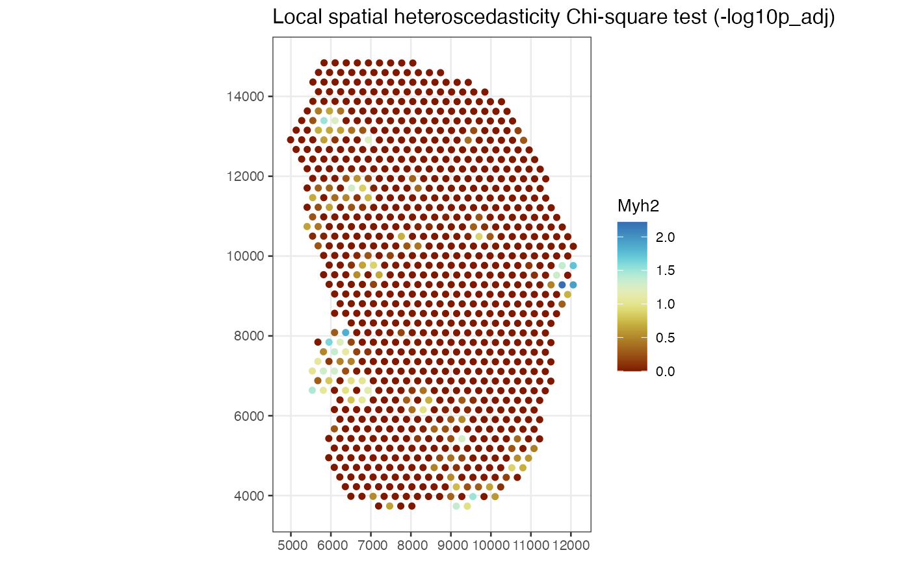
In this plot and all following plots of p-values, a divergent palette is used to show locations that are significant after adjusting for multiple testing and those that are not significant in different colors. The center of the divergent palette is p = 0.05, so the brown spots are significant while a dark blue means really not significant.
The “pysal” column displays the quadrants relative to the means in the Moran plot. The result is similar to that from k-means clustering shown above.
plotLocalResult(sfe_tissue, "localmoran", features = "Myh2",
colGeometryName = "spotPoly", attribute = "pysal",
swap_rownames = "symbol", image_id = "lowres", color = "black",
linewidth = 0.1)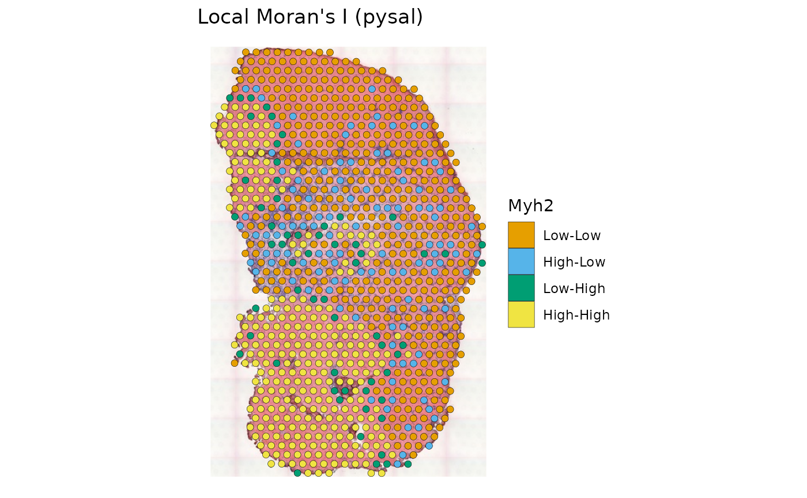
Getis-Ord Gi*
Getis-Ord Gi* is used to find hotspots and coldspots of a feature in space. A hotspot is a cluster of high values in space, and a coldspot is a cluster of low values in space. Getis-Ord Gi* is essentially the z-score of the spatially lagged value of the feature at each location (), where is the spatial weight. In the original publication for Getis-Ord Gi* from 1992 (Getis1992-fr?), the spatial weight is a distance-based binary weight indicating whether another location is within a certain distance from each location . Getis-Ord Gi excludes the location itself in the computation of mean and variance of the lagged value, while Gi* includes the location itself. Usually Gi and Gi* yield similar results. The mean and variance used in the z-score differ in Gi and Gi* and is described in this paper from 1995 (Ord1995-we?) and derived in (Getis1992-fr?).
Binary weights are recommended for Getis-Ord Gi*.
colGraph(sfe_tissue, "visium_B") <- findVisiumGraph(sfe_tissue, style = "B")
sfe_tissue <- runUnivariate(sfe_tissue, type = "localG_perm", features = "Myh2",
colGraphName = "visium_B", include_self = TRUE,
swap_rownames = "symbol")
plotLocalResult(sfe_tissue, "localG_perm", features = "Myh2",
colGeometryName = "spotPoly", divergent = TRUE,
diverge_center = 0, image_id = "lowres", swap_rownames = "symbol",
color = "black", linewidth = 0.1)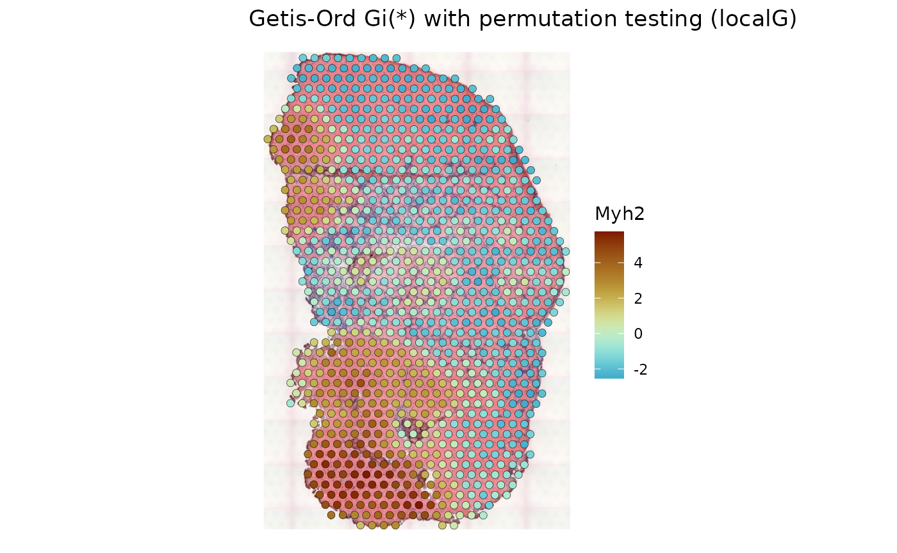
High values of Gi* indicate hotspots, while low values of Gi* indicate coldspots.
localResultAttrs(sfe_tissue, "localG_perm", "Myh2", swap_rownames = "symbol")
#> [1] "localG" "Gi" "E.Gi"
#> [4] "Var.Gi" "StdDev.Gi" "Pr(z != E(Gi))"
#> [7] "Pr(z != E(Gi)) Sim" "Pr(folded) Sim" "Skewness"
#> [10] "Kurtosis" "-log10p Sim" "-log10p_adj Sim"
#> [13] "cluster"Plot the pseudo-p-values from the simulation
plotLocalResult(sfe_tissue, "localG_perm", features = "Myh2",
attribute = "-log10p_adj Sim",
colGeometryName = "spotPoly", divergent = TRUE,
diverge_center = -log10(0.05), swap_rownames = "symbol",
image_id = "lowres")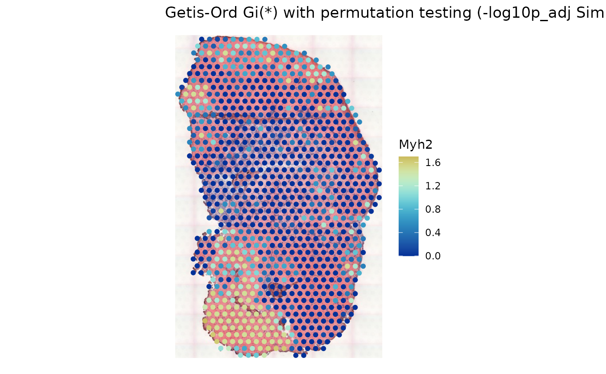
The hotspots are as expected. Here warm color indicates adjusted .
Local results can also be computed for annotation geometries.
annotGraph(sfe_tissue, "myofiber_poly2nb_B") <-
findSpatialNeighbors(sfe_tissue, type = "myofiber_simplified", MARGIN = 3,
method = "poly2nb", zero.policy = TRUE, style = "B")
#> Warning in (function (pl, row.names = NULL, snap = NULL, queen = TRUE, useC = TRUE, : some observations have no neighbours;
#> if this seems unexpected, try increasing the snap argument.
#> Warning in (function (pl, row.names = NULL, snap = NULL, queen = TRUE, useC = TRUE, : neighbour object has 75 sub-graphs;
#> if this sub-graph count seems unexpected, try increasing the snap argument.
sfe_tissue <- annotGeometryUnivariate(sfe_tissue, "localG_perm", "area",
annotGeometryName = "myofiber_simplified",
annotGraphName = "myofiber_poly2nb_B",
include_self = TRUE, zero.policy = TRUE)
plotLocalResult(sfe_tissue, "localG_perm", "area",
annotGeometryName = "myofiber_simplified",
divergent = TRUE, diverge_center = 0)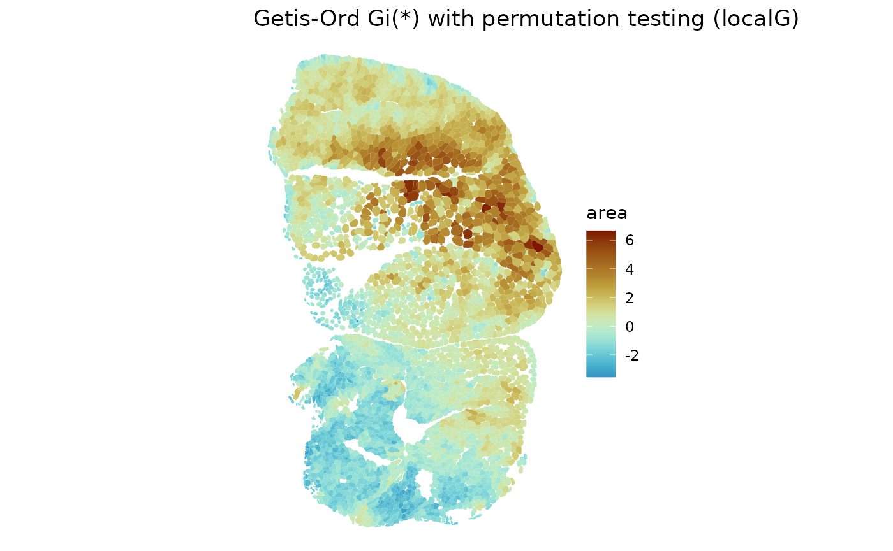
plotLocalResult(sfe_tissue, "localG_perm", "area",
annotGeometryName = "myofiber_simplified",
attribute = "-log10p_adj Sim",
divergent = TRUE, diverge_center = -log10(0.05))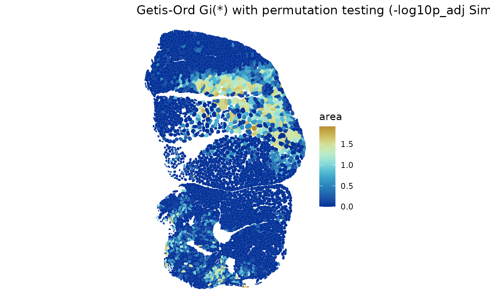
The hotspots and coldspots are as expected. Warm color indicates adjusted .
Local spatial heteroscedasticity (LOSH)
LOSH (Ord2012-qi?) is defined as
where, , and
By default, so LOSH is like a local variance. See (Ord2012-qi?) for more details and interpretation.
sfe_tissue <- runUnivariate(sfe_tissue, "LOSH.cs", "Myh2",
colGraphName = "visium", swap_rownames = "symbol")
plotLocalResult(sfe_tissue, "LOSH.cs", features = "Myh2",
colGeometryName = "spotPoly", swap_rownames = "symbol",
image_id = "lowres")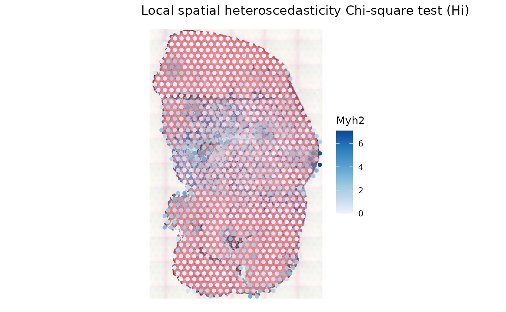
For this gene, it isn’t clear whether LOSH relates to gene expression levels.
localResultAttrs(sfe_tissue, "LOSH.cs", "Myh2", swap_rownames = "symbol")
#> [1] "Hi" "E.Hi" "Var.Hi" "Z.Hi" "x_bar_i"
#> [6] "ei" "Pr()" "-log10p" "-log10p_adj"While Voyager does wrap LOSH.mc() to
perform permutation testing of LOSH, this is very time consuming. A
chi-squared approximation is described in the 2012 LOSH paper to account
for non-normality of the data and to approximate the mean and variance
of the permutation distributions, so p-values of LOSH can be more
quickly computed, with LOSH.cs().
plotLocalResult(sfe_tissue, "LOSH.cs", features = "Myh2",
attribute = "-log10p_adj", colGeometryName = "spotPoly",
divergent = TRUE, diverge_center = -log10(0.05),
swap_rownames = "symbol", image_id = "lowres") +
theme_void()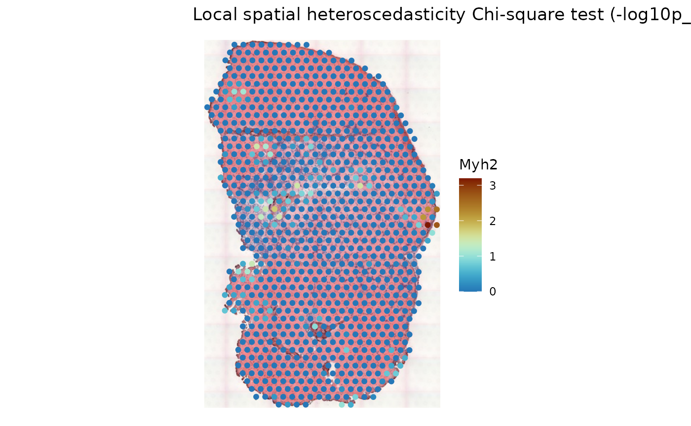
For this gene, the local conditions are mostly homogenous, except for a few spots most at the injury site. Warm color indicates adjusted .
Caveats
- The H&E image can alter perception of the colors of the geometries.
- Only 2D data is supported at present, although in principle,
sfandGEOSsupport 3D data. - Spatial neighborhoods only make sense within the same tissue section. Then what to do with multiple tissue sections, from biological replica, and from different conditions? For the mouse brain, different biological replica can be registered to the Allen Common Coordinate Framework (CCF) to be spatially comparable. Indeed, it would be interesting to see the biological variability of healthy wild type gene expression at the same fine scaled region in the brain. However, there is no CCF for tissues without a stereotypical structure, such as adipose and skeletal muscle. We don’t have a good solution to spatially compare different tissue sections yet. Perhaps global spatial statistics over the whole section or histological regions within the section can be compared. The problem remains to select the most informative metrics to compare. Perhaps a spatially-informed dimension reduction method, taking not only the gene count matrix, but also the adjacency matrices of the spatial neighborhood graphs (different sections will be different blocks in the matrix) projecting the cells or Visium spots from different sections into a shared low dimensional space can facilitate the comparison. Here batch effect must be corrected, and the dimension reduction should be interpretable, and scalable.
Session info
sessionInfo()
#> R version 4.4.2 (2024-10-31)
#> Platform: x86_64-pc-linux-gnu
#> Running under: Ubuntu 22.04.5 LTS
#>
#> Matrix products: default
#> BLAS: /usr/lib/x86_64-linux-gnu/openblas-pthread/libblas.so.3
#> LAPACK: /usr/lib/x86_64-linux-gnu/openblas-pthread/libopenblasp-r0.3.20.so; LAPACK version 3.10.0
#>
#> locale:
#> [1] LC_CTYPE=C.UTF-8 LC_NUMERIC=C LC_TIME=C.UTF-8
#> [4] LC_COLLATE=C.UTF-8 LC_MONETARY=C.UTF-8 LC_MESSAGES=C.UTF-8
#> [7] LC_PAPER=C.UTF-8 LC_NAME=C LC_ADDRESS=C
#> [10] LC_TELEPHONE=C LC_MEASUREMENT=C.UTF-8 LC_IDENTIFICATION=C
#>
#> time zone: UTC
#> tzcode source: system (glibc)
#>
#> attached base packages:
#> [1] stats4 stats graphics grDevices utils datasets methods
#> [8] base
#>
#> other attached packages:
#> [1] reticulate_1.40.0 dplyr_1.1.4
#> [3] bluster_1.16.0 BiocParallel_1.40.0
#> [5] patchwork_1.3.0 scales_1.3.0
#> [7] sf_1.0-19 SFEData_1.8.0
#> [9] scran_1.34.0 scater_1.34.0
#> [11] ggplot2_3.5.1 scuttle_1.16.0
#> [13] SingleCellExperiment_1.28.1 SummarizedExperiment_1.36.0
#> [15] Biobase_2.66.0 GenomicRanges_1.58.0
#> [17] GenomeInfoDb_1.42.0 IRanges_2.40.0
#> [19] S4Vectors_0.44.0 BiocGenerics_0.52.0
#> [21] MatrixGenerics_1.18.0 matrixStats_1.4.1
#> [23] Voyager_1.8.1 SpatialFeatureExperiment_1.9.4
#>
#> loaded via a namespace (and not attached):
#> [1] splines_4.4.2 filelock_1.0.3
#> [3] bitops_1.0-9 tibble_3.2.1
#> [5] R.oo_1.27.0 lifecycle_1.0.4
#> [7] edgeR_4.4.0 lattice_0.22-6
#> [9] MASS_7.3-61 magrittr_2.0.3
#> [11] limma_3.62.1 sass_0.4.9
#> [13] rmarkdown_2.29 jquerylib_0.1.4
#> [15] yaml_2.3.10 metapod_1.14.0
#> [17] sp_2.1-4 cowplot_1.1.3
#> [19] RColorBrewer_1.1-3 DBI_1.2.3
#> [21] multcomp_1.4-26 abind_1.4-8
#> [23] spatialreg_1.3-5 zlibbioc_1.52.0
#> [25] purrr_1.0.2 R.utils_2.12.3
#> [27] RCurl_1.98-1.16 TH.data_1.1-2
#> [29] rappdirs_0.3.3 sandwich_3.1-1
#> [31] GenomeInfoDbData_1.2.13 ggrepel_0.9.6
#> [33] irlba_2.3.5.1 terra_1.7-83
#> [35] units_0.8-5 RSpectra_0.16-2
#> [37] dqrng_0.4.1 pkgdown_2.1.1
#> [39] DelayedMatrixStats_1.28.0 codetools_0.2-20
#> [41] DropletUtils_1.26.0 DelayedArray_0.32.0
#> [43] tidyselect_1.2.1 UCSC.utils_1.2.0
#> [45] memuse_4.2-3 farver_2.1.2
#> [47] ScaledMatrix_1.14.0 viridis_0.6.5
#> [49] BiocFileCache_2.14.0 jsonlite_1.8.9
#> [51] BiocNeighbors_2.0.0 e1071_1.7-16
#> [53] survival_3.7-0 systemfonts_1.1.0
#> [55] dbscan_1.2-0 tools_4.4.2
#> [57] ggnewscale_0.5.0 ragg_1.3.3
#> [59] Rcpp_1.0.13-1 glue_1.8.0
#> [61] gridExtra_2.3 SparseArray_1.6.0
#> [63] mgcv_1.9-1 xfun_0.49
#> [65] EBImage_4.48.0 HDF5Array_1.34.0
#> [67] withr_3.0.2 BiocManager_1.30.25
#> [69] fastmap_1.2.0 boot_1.3-31
#> [71] rhdf5filters_1.18.0 fansi_1.0.6
#> [73] spData_2.3.3 digest_0.6.37
#> [75] rsvd_1.0.5 mime_0.12
#> [77] R6_2.5.1 textshaping_0.4.0
#> [79] colorspace_2.1-1 wk_0.9.4
#> [81] LearnBayes_2.15.1 jpeg_0.1-10
#> [83] RSQLite_2.3.8 R.methodsS3_1.8.2
#> [85] utf8_1.2.4 generics_0.1.3
#> [87] data.table_1.16.2 class_7.3-22
#> [89] httr_1.4.7 htmlwidgets_1.6.4
#> [91] S4Arrays_1.6.0 spdep_1.3-6
#> [93] pkgconfig_2.0.3 scico_1.5.0
#> [95] gtable_0.3.6 blob_1.2.4
#> [97] XVector_0.46.0 htmltools_0.5.8.1
#> [99] fftwtools_0.9-11 png_0.1-8
#> [101] SpatialExperiment_1.16.0 knitr_1.49
#> [103] rjson_0.2.23 curl_6.0.1
#> [105] coda_0.19-4.1 nlme_3.1-166
#> [107] proxy_0.4-27 cachem_1.1.0
#> [109] zoo_1.8-12 rhdf5_2.50.0
#> [111] BiocVersion_3.20.0 KernSmooth_2.23-24
#> [113] parallel_4.4.2 vipor_0.4.7
#> [115] AnnotationDbi_1.68.0 desc_1.4.3
#> [117] s2_1.1.7 pillar_1.9.0
#> [119] grid_4.4.2 vctrs_0.6.5
#> [121] BiocSingular_1.22.0 dbplyr_2.5.0
#> [123] beachmat_2.22.0 sfheaders_0.4.4
#> [125] cluster_2.1.6 beeswarm_0.4.0
#> [127] evaluate_1.0.1 isoband_0.2.7
#> [129] zeallot_0.1.0 magick_2.8.5
#> [131] mvtnorm_1.3-2 cli_3.6.3
#> [133] locfit_1.5-9.10 compiler_4.4.2
#> [135] rlang_1.1.4 crayon_1.5.3
#> [137] labeling_0.4.3 classInt_0.4-10
#> [139] fs_1.6.5 ggbeeswarm_0.7.2
#> [141] viridisLite_0.4.2 deldir_2.0-4
#> [143] Biostrings_2.74.0 munsell_0.5.1
#> [145] tiff_0.1-12 Matrix_1.7-1
#> [147] ExperimentHub_2.14.0 sparseMatrixStats_1.18.0
#> [149] bit64_4.5.2 Rhdf5lib_1.28.0
#> [151] KEGGREST_1.46.0 statmod_1.5.0
#> [153] AnnotationHub_3.14.0 igraph_2.1.1
#> [155] memoise_2.0.1 bslib_0.8.0
#> [157] bit_4.5.0